|
疯狂的雷达 - DIY安装标致307无线倒车雷达全纪实
本人一向认为花钱越多对环境的破坏越大，所以我一直劝朋友们买车不要买超过人民币10万。2009年7月我买了标致307乞丐版1.6升MT手动挡，车价人民币99800。所谓乞丐版，就是最基本配置的，什么都没有，当然也没有倒车雷达。半年来倒车撞过一次树，上个月倒车还蹭过一辆奥迪A6，还好只蹭掉点泥巴，趁着夜黑风高我就强行逃逸了。
逃到半路看到一家汽车修理店，问倒车雷达的价钱，答曰最低600元。我顿时凉了半截，这可是我小半个月工资啊。回到家我上淘宝网找，卖倒车雷达的有几百家，从一百元到一千多，买哪个好？最后我买了个108元的，吉利数字，还是无线的呢。
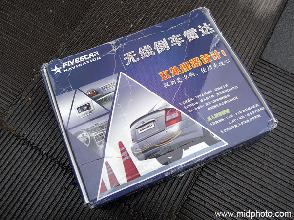
等了四天也没到货，一看物流给误发到山西太原去了，晕。继续等，一周之后，也就是2009年12月30日，这108元的倒车雷达终于到了长沙我手里。
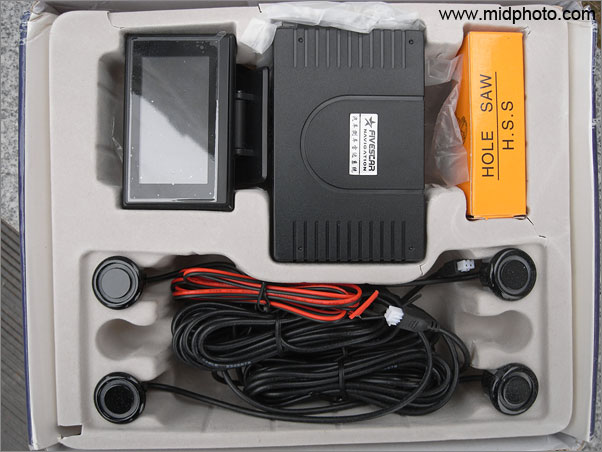
打开盒子，这是全套雷达
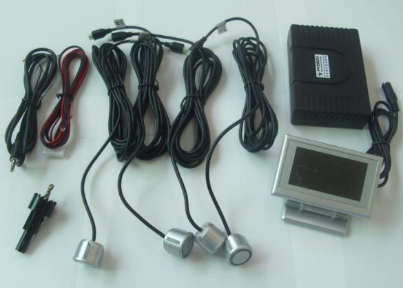
就是这些东西：有探头4个，液晶显示屏一个，主机一个，钻孔用的钻头一个，线若干。（此张图借用淘宝老板的）
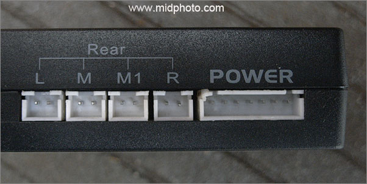
到小区汽车美容店一问，装雷达手工费98元。我晕，雷达才108元呢。4S店就更别说了，我懒得问，至少双倍价。回到家我仔细研究了一下说明书，貌似安装很简单啊。这是主机背后的插孔，只要接上电源，再接上四个探头不就完事了吗？人穷志不穷，我决定自己动手。说明书写道：将主机电源接倒车灯，一挂倒档雷达即开始工作。
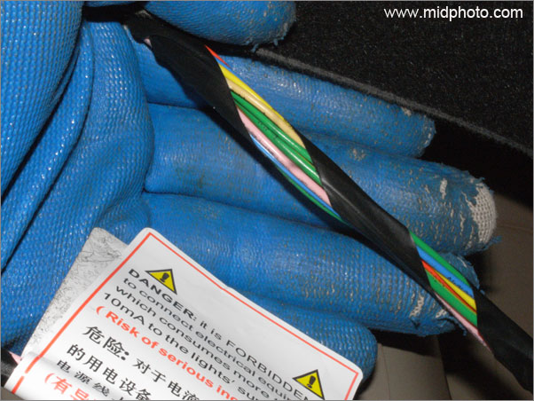
OK开始干活！打开307的行李箱，再打开左尾灯的盖，后面有一堆线，貌似有十几根。我顿时倒吸一口凉气，天哪，这到底哪根是倒车灯线？
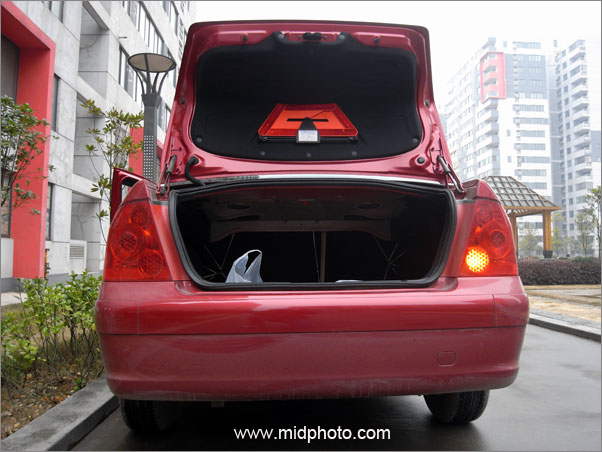
挂上倒车档，只有右边有倒车灯，左边没有倒车灯（正版标致307的标志）
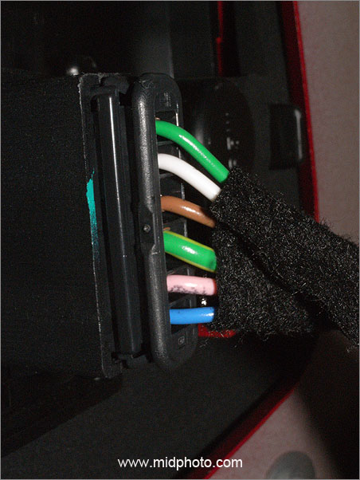
这是左尾灯线束，也就是说，这六根线可以排除
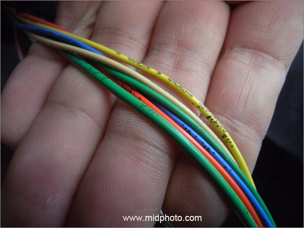
这是右尾灯的线束，6根线，哪两根是倒车线？本人一向有第六感，盯着这6根线我看了一分钟，到眼发直的时候，我直觉红色和绿色这两根就是我要找的倒车线。只要挂上倒档，若这两线的电压是12伏的话，那就对了。（数字万用表出场，也是刚在淘宝买的，99元连电烙铁一起）。OK，就这么干！我点燃打火机，准备扒电线皮。
且慢！万一不是呢？此时我脑海里浮现出xxx间谍大片定时炸弹的镜头，那经常也是赌一手，命悬一线时刻，他们也常赌那根红色线！
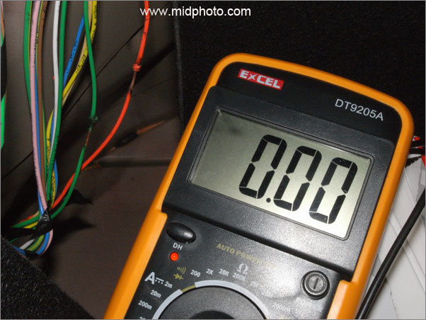
按道理应该做无损测试，要是有大头针或者缝衣针就可以插进电线里，挂上倒档量电压。但我在家里怎么也找不到大头针等，是出门买针还是相信我的直觉？
第一回合结局：认赌服输，红线和绿线不是倒车的！
此时我很沮丧。线没烧对。但我有一万分的信心，红绿都不是，黄色那两根一定是！我要再赌一手。接着烧！
唉，以后我再也不提什么第六感了。烧了浅黄和深黄两根，居然依然不是倒车线！我要晕死。此时天色已黑，但我的心比天色更暗淡。难道要烧完所有的6根线才能找出倒车的？这可好说不好听啊。为了防止短路，线怎么烧的还得怎么粘（用绝缘胶布）。我真失败。
决定停止挑灯夜战，回家上网找资料，发帖子请教高人。
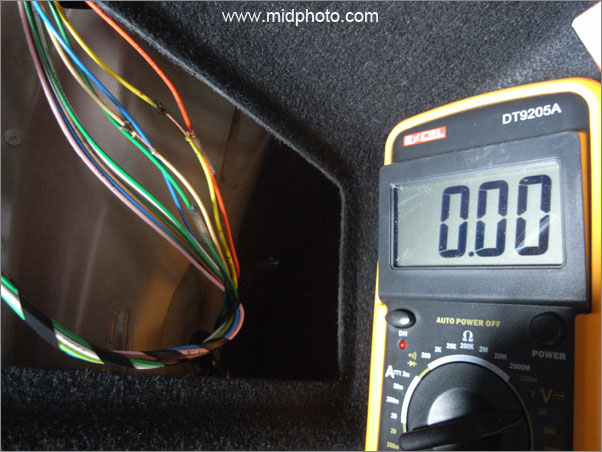
补充说明：红绿线电压为零，挂上倒档后是11伏，不是电瓶的12伏，接上主机后立马下降为7伏，这肯定不是倒车线。而两根黄色的电压在倒档下是11.6伏，接上主机后不足9伏，达不到主机工作电压，显然也不是倒车线。
这里我要严重感谢汽车之家307论坛的老郝123，他告诉我浅黄的才是倒车线，黄绿色接地。唉，早上汽车之家咨询的话就不至于烧坏那么多线皮了。这真是，我肠子都悔青了。
第二天继续干活！这是2010年的1月2日。这个元旦假期就跟你这个雷达耗上了，我就不信邪。
果然浅黄和黄绿这两根才是我历尽千辛万苦要找的倒车线。接上主机和显示屏，雷达工作正常，悦耳的女声距离播报。我哭！
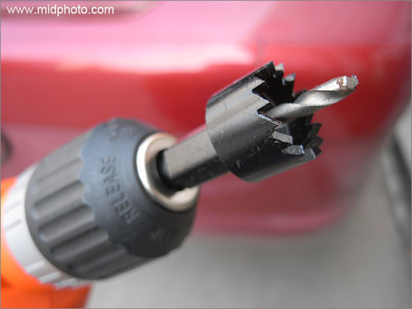
接下来要钻四个孔。电钻出场。这是打孔专用钻头，本来我想用普通钻头多钻几个孔，合起来不就是一个大孔了吗？所以这十元一个的专用钻头我没有买。吝啬就彻底吝啬到家。但淘宝老板发货时候居然也送了一个给我，白占人家便宜，真是不好意思。
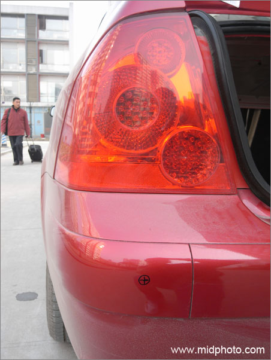
打孔之前，先用笔做好记号，四个孔从左至右要距离均匀（40厘米左右），孔高度离地面约70厘米，还要保证探头面要基本垂直于地面。
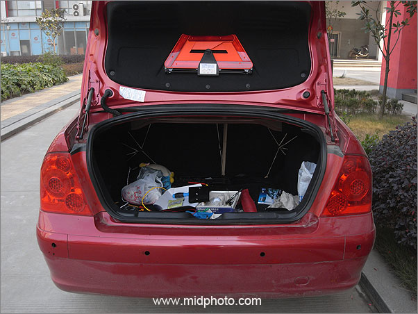
四个孔钻好了，就是这个样子。
此时老革命又遇到了新问题。四个探头安装在塑料保险杠上，而主机是安装在行李箱里面的，行李箱四周全是铁皮的，线怎么接进来呢？难道要在铁皮上打个洞？我上上下下钻研了半个小时，拆掉了6个螺丝，还是不知道怎么走线（如果不在后备箱铁皮上钻孔的话）。难道要拆整个保险杠？此时天色已晚。有了昨天的教训我不能再轻举妄动，要坚持无损安装的原则。收工回家，到汽车之家论坛发帖子。
果不其然，这里我要严重感谢老猫也疯狂，他告诉我不用钻孔，从尾灯处就可以过线。
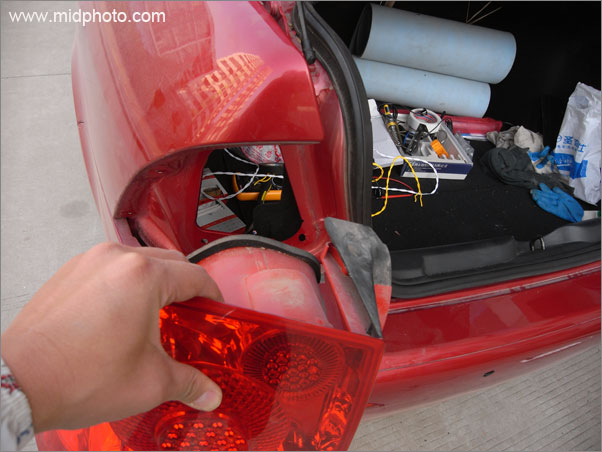
这已经是安装的第三天了，前两天各花了两小时，今天我无论如何也要搞定这个雷达（2010年1月3日），否则没脸见人了。
说起来容易做起来难，上上下下又钻研了半个小时，我还是看不出尾灯那里怎么走线，除非把尾灯给拆了。我一气之下拆了尾灯的三个固定螺丝，拔掉电线接头，整个把左尾灯拆了下来。
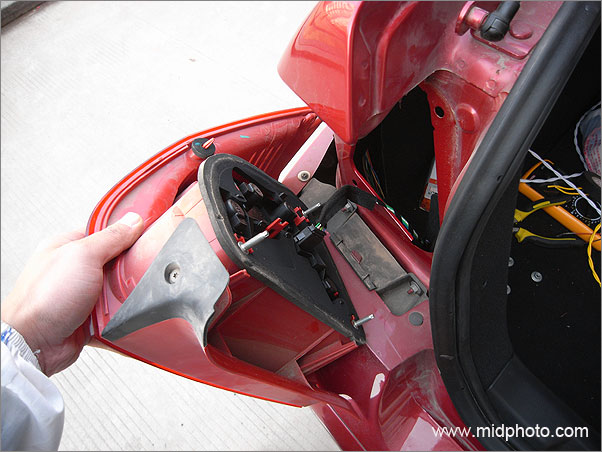
拆下尾灯之后，应该容易走线了吧？
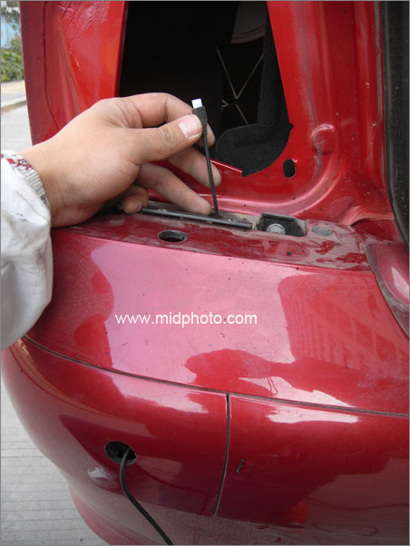
果然，左边最近的这个探头线终于从保险杆接入尾箱了。
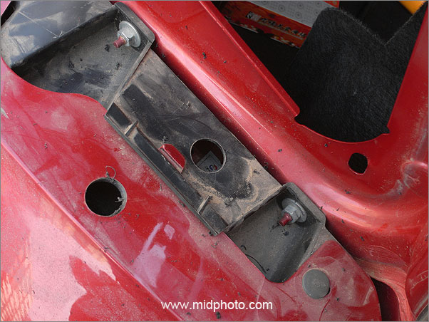
但我高兴太早了，剩下的三个探头，特别是最右边那个因为线不够长，依然不好走线。307的后保险杠下部向里弯曲很多，实在不好弄。我一气之下抛弃了无损安装的原则，又在保险杠尾灯下多钻了两个孔，这回视线好了，应该好走线了吧？
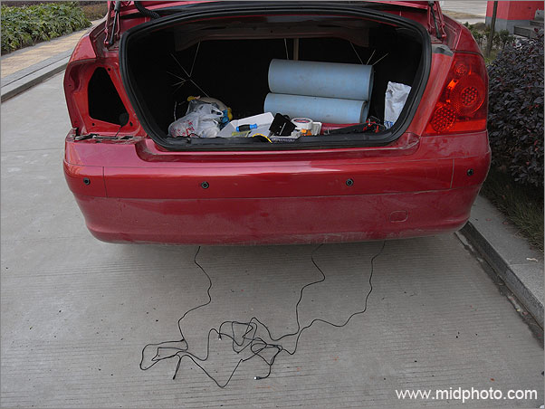
装上中部和右边的三个探头，线拖了一地
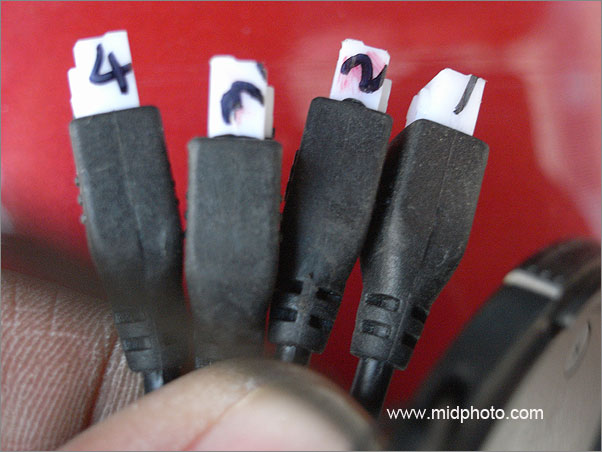
四个探头都长得一个样子，为了保证主机接线正确，我先把它们编号，1234.
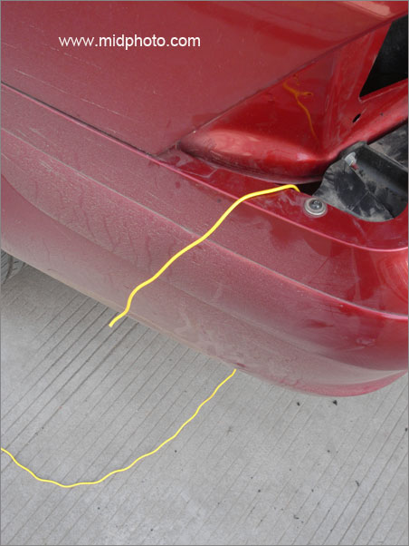
新问题：线是软的，从下往上还是不好进。这个疯狂的雷达.
已经让我处于半疯狂状态了。怎么办？难不倒俺。我从上部穿一根线下来，再把探头捆在一起往上拖，终于都拖进行李箱了。哈哈.
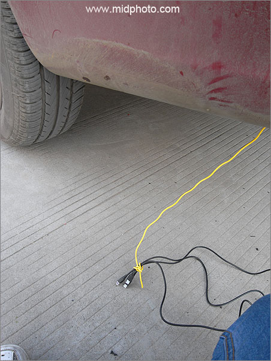
把三个难搞的探头捆起来往上拖
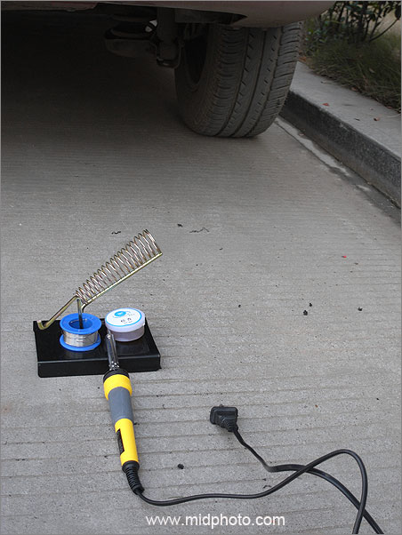
走线问题搞定。为了保证倒车灯线和雷达线连接可靠，电烙铁出场。
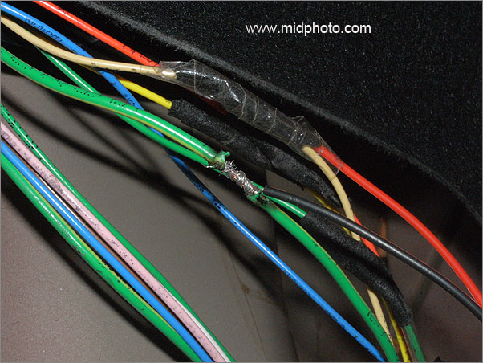
把线捆结实，再点焊，保证电路万无一失。
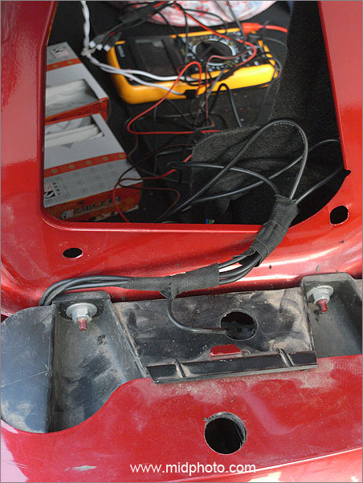
补图一张：四个探头线就是这样从保险杠接进行李箱的
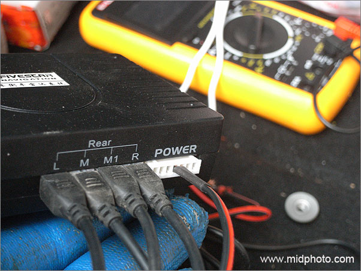
终于，探头线和主机以及电源线在尾箱里汇合了。
尾箱里的走线搞定，接下来就是驾驶台的液晶显示屏。这个雷达是无线的，按道理显示屏无需和尾箱里的主机连接（主机有发射器，显示屏带接收器，类似收音机）。
说明书也建议显示屏电源要接在电瓶上（在发动机舱），我认为这样接线不好：点火时整车电压都不稳定，会对显示屏不好。我决定显示屏电源也接倒车灯，只要一挂倒档，主机和显示屏就能同时开始工作。
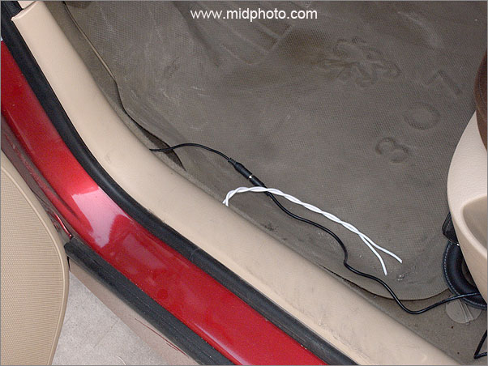
于是我搞了一根4米长的电线（白色），从倒车灯接了过来，走迎宾踏板下面，从尾箱一直接到驾驶台上的液晶显示屏上。
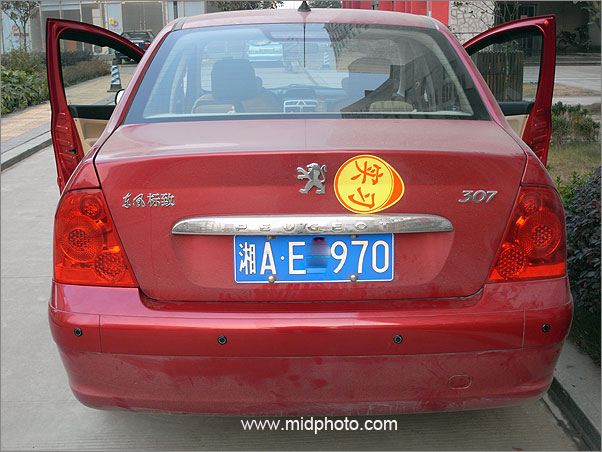
线路全部搞定。唯一遗憾，探头是黑色的，只好下回用补漆笔上色了。
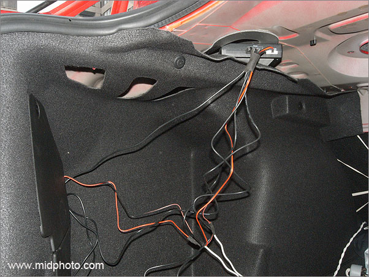
这是尾箱里的线束（还没捆好的）.主机就藏在行李箱顶部。
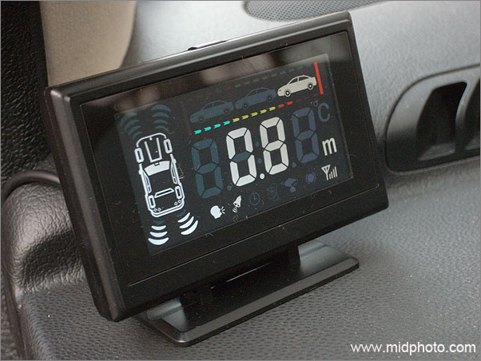
液晶屏是用3M胶带贴在驾驶台上的。一次性试机成功。三天5个小时的努力没有白费，我心里那个美呀。嘿嘿。
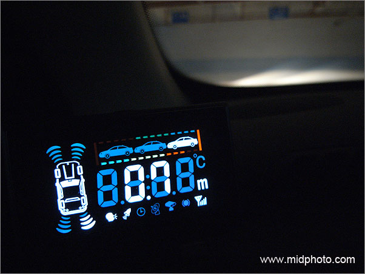
晚上漂亮的液晶显示
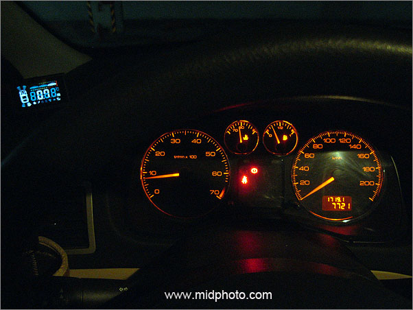
再看看，漂亮吧，108元的雷达系统，哈哈
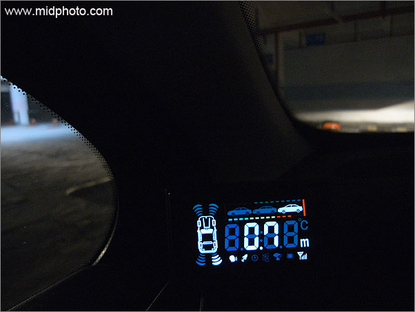
|